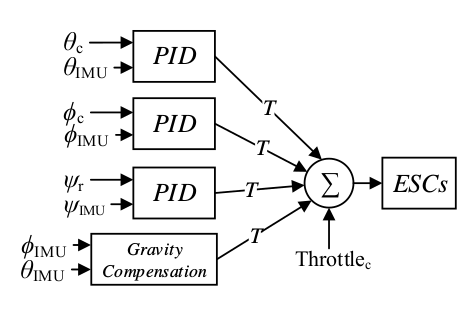

Endüstride en yaygın kullanilan, en basit kontrol yöntemi PID kontrol yöntemi. Bu yaklaşım kontrol edilen mekanizma, süreç, fabrika, vs için elde denklemler elde olmasa bile çoğunlukla işler (mekanizmanın fazla gayrı lineer olmaması kaydıyla). Elde edilmek istenilen bir parametre hedefi vardır, mesela bu arabanın hızı olabilir, kontrol edilen ise bir gaz pedalı olabilir (pedalın basılma açısı gibi), ve arabanın belli \(\Delta t\) aralıklarında hız ölçümüne bakılır, ve en basit formda istenilen hız ile o anda olunan hız arasındaki fark, hataya oranlı bir kontrol uygulaması yapılır. Eğer 60 km/saat ile gidilmek isteniyorsa ama ölçüm 40 km/saat diyorsa aradaki farka oranla gaz pedalına biraz daha basılır. En basit formda dedik, bazı ekler, o ana kadar olan hataların toplamına oranlı (integral), ya da hatanın önceki hataya göre artışına oranlı (derivative) da olabilir.
Tüm bunlar biraraya koyulunca PID kontrolünü elde ederiz [1, sf. 42] [3]. Formül,
\[ u(t) = K_p \cdot e(t) + K_i \cdot \int_0^t e(\tau) \mathrm{d} \tau + K_d \frac{\mathrm{d} e(t)}{\mathrm{d} t} \]
\(K_p\) ile hataya oranlı (proportional) bir kontrol uygulanır, \(K_I\) üzerinden önceki hataların entegrali (toplamı) üzerinden bir kontrol, \(K_D\) ile hata değişimine oranlı kontrol uygulamış oluruz. Bu sabitlerin bulunması deneme / yanılma ile olabilir (ayar -tune-) safhasında bunlar yapılabilir.
Bu yaklaşımda genel olarak kontrol edilen parametre ve hedef değişken arasında yapay / lineer bir ilişki kurulduğu söylenebilir. Sabitleri ayarlayarak herhangi bir sistem için bu ilişkinin işlemesini sağlıyoruz, fakat formülsel olarak elimizde daha derin bir bağlantı yok. “Hata’’ büyüklüğüne, onun birkaç formuna bakarak, bunlara oranla bir kontrol uygulamak PID yaklaşımının özüdür. Pratikte iyi işliyor.
Bir sistemi kontrol etmek için birden fazla değişken olabilir, tipik olarak her değişken için ayrı bir PID hesabı işletilir. Kod idaresi açısından bu sebeple üstteki formülü bir obje içine koymak böylece her değişken için ayrı bir PID objesi yaratmak iyi bir yaklaşım olabilir. Her obje kendi eski hatasını, kendi değişkenini takip edip, ona özel kontrol hesabını her adımda hesaplayacaktır.
class PID:
def __init__(self, dt, Kp, Ki, Kd, lastErr=0.0):
self.Kp = Kp
self.Ki = Ki
self.Kd = Kd
self.dt = dt
self.errSum = 0
self.lastErr = lastErr
def compute(self, setpoint, input):
error = setpoint - input
self.errSum += (error * self.dt)
dErr = (error - self.lastErr) / self.dt
output = self.Kp * error + self.Ki * self.errSum + self.Kd * dErr
self.lastErr = error
return output(Kurucuda lastErr geçildi, bu başta çok yüksek
olabilecek ‘önceki hata’ problemini düzeltmek için)
Örnek olarak basit bir hedef, 10, ve rasgele bazı çarpanlar üzerinden uygulanacak kontrolü hesaplayalım. 3 ile başlıyoruz,
p = PID(0.01, 1, 1, 0, 10)
print (p.compute(10,3))
print (p.compute(10,4))
print (p.compute(10,5))
print (p.compute(10,8))7.07
6.13
5.18
2.2Örnek
Klasik fizik üzerinden ilerleyelim.. Alttaki örnek [2, sf. 12]’den alınmıştır, \(M\) kütlesindeki bir objeyi masa üzerinden ittirerek bir hedef hızına ulaştırmak istiyoruz.
\(F = m \ddot{x}\) formülü standart fizik, herhangi bir zaman noktasındaki \(T\) zaman aralığındaki hız artışı için gereken kuvvet \(F = \frac{m v_t - m v_{t-1}}{T}\) ile hesaplanabilir. Sürtünmeyi hesaba katmayalım. Zaman aralığı 10 milisaniye olsun, kütle \(M = 2\) kg, ulaşılmak istenen hedef hız 4 metre / saniye. Durağan hızdan başlıyoruz, ve PID kontrol ile her \(t\) anında uygulanması gereken kuvveti görmek istiyoruz. Endüstriyel uygulamalarda bu tür problemler için PD yaklaşımı kullanılıyor, yani I yok, o yüzden onun sabitini sıfır yapıyoruz (iptal etmiş oluyoruz), geri kalanlar için \(K_p=2\), \(K_D=1\) üzerinden,
import pandas as pd
T = 0.1
M = 2.0
desired_vel = 4.0
vel = 0
p = PID(T, 2.0, 0, 1.0, 4.0)
forces = []; vels = []; velerrs = []; ts = []
for i in range(100):
vels.append(vel)
force = p.compute(desired_vel, vel)
accel = force / M
vel = vel + accel*T
forces.append(force)
velerrs.append(p.lastErr)
ts.append(i*T)
df = pd.DataFrame([ts, forces, vels, velerrs]).T
df.columns = ['ts','forces','vels','velerrs']
df = df.set_index('ts')
df[['forces','vels']].plot()
plt.savefig('phy_030_pid_03.png')
df[['vels','velerrs']].plot()
plt.savefig('phy_030_pid_04.png')

Quadkopter
Bir quadkopter dört tane motor üzerinden kontrol edilen bir İHA’dır (drone, insansız hava aracı). Helikopter aksine pervanelere / dört motora eğim verilemez, sabit dururlar, ve araç sadece bu motorların daha az veya daha çok döndürülmesi üzerinden kontrol edilir. Her motorun pervanesi bir yanındakinin tersi yönünde döner, böylece her motorun getirebileceği savrulma dengelenmiş olur, teorik olarak dengeli bir quadkopterde her motor aynı hızda döndüğünde araç havada asılı duruyor olmalıdır. Tabii pratikte pek çok sebep dolayısıyla bu olmayabilir, o yüzden asılı durma, herhangi bir yöne uçma, dönme için quadkopter sürekli kontrol edilmelidir.

Resimde dönüş açıları gösteriliyor, havacılıktaki adım, yalpa , sapma (pitch, roll, yaw) açıları bunlar, mesela z ekseni bazlı bir dönüş sapma. Kontrol \(T = [T_0,T_1,T_2,T_3]\) üzerinden dört motora uygulanacak güçtür [1, sf. 44], quadkopterin hedeflenen duruş açıları \(\theta_c, \phi_c, \psi_c\) olsun, ölçüm aletlerinden o andaki duruş \(\theta_{IMU}, \phi_{IMU}, \psi_{IMU}\) ile geliyor olsun.

Kontrol için üç açı, artı, yukarı aşağı iniş çıkış amaçlı yerçekimi telafisiyle (gravity compensation) beraber dört tane PİD kontrolü tasarlanıyor. Mesela [1, sf. 46]’daki koda bakarsak, istenen adım açısına ulaşmak için adım PID’den gelen kontrolü alıyoruz, ve bu kontrolü yine belli bir sabitle çarpıp \(T_0,T_1\)’e ekliyoruz, \(T_2,T_3\)’ten çıkartıyoruz. İki üstteki resimden pozitif bu şekilde uygulanan bir değerin İHA’yı ön kısma göre yukarı kaldıracağını, yani \(y\) eksen bazlı bir dönme yaratacağını kestirebiliriz. Tabii her quadkopterin fiziki yapısı sebebiyle her açının hatasına oranla uygulanacak düzeltme \(K_p,K_I,K_D\) sabitleri farklı olabilir, ne olduklari başta bilinmez, bu sabitler tasarlama evresinde deneme / yanılma ile ayarlanarak İHA işler hale getirilir.
Kaynaklar
[1] Zimmerman, Flight Control and Hardware Design of Multi-Rotor Systems
[2] Jamshidi, Intelligent Control Systems with an Introduction to System of Systems Engineering
[3] Beauregard, Improving the Beginner’s PID - Introduction, http://brettbeauregard.com/blog/2011/04/improving-the-beginners-pid-introduction/